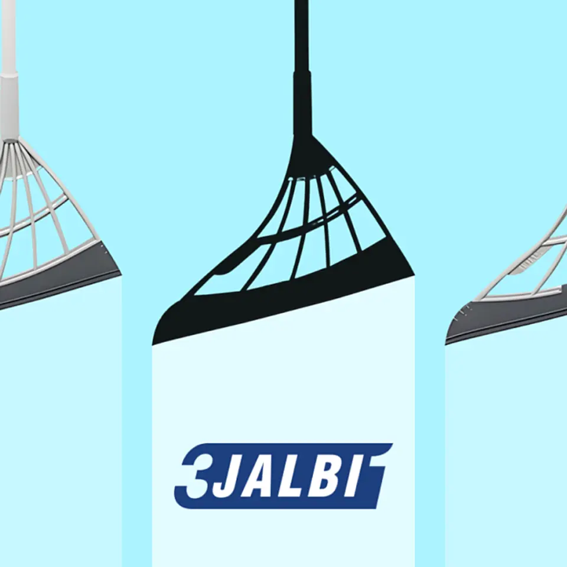
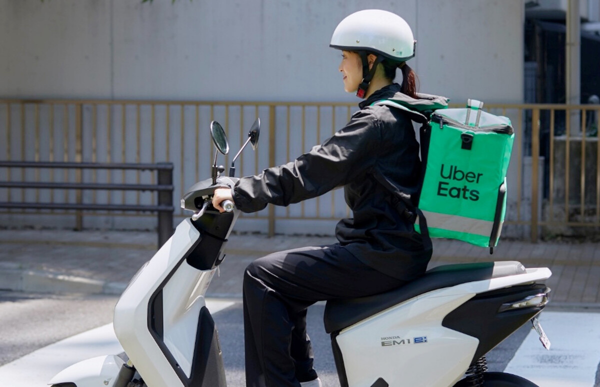

【急転】42年ぶり最高益へ。パナソニックが「大復活」の真相
発行日時：2026-11-04 05:30:00 JST
NewsPicks原文を読む
あなたに関係ありそうな理由
大きな改革と新たな需要が利益にどう表れたか、事業ごとの数字から考える材料です。
概要
パナソニックホールディングスは2026年度の通期業績予想を引き上げ、営業利益を7100億円と見込む。1984年の5757億円を上回れば42年ぶりの最高益となる見通しだ。調整後営業利益の予想も前回から1300億円増の7800億円に修正した。5月に掲げた2028年度の目標7500億円以上を、2年前倒しで達成する計算になる。楠見雄規社長も10月30日の会見で、ここまでの改善は驚きだったと語った。
背景には、AIインフラ向け需要の拡大がある。2026年度上期の売上高は前年同期比7％増の4兆925億円、営業利益は120％増の3632億円だった。事業別では、車載電池やデータセンター向け蓄電システムを担うエナジーが965億円、電子部品や材料のインダストリーが869億円の営業利益を稼いだ。両事業で全社営業利益の半分以上を占める。家電の印象が強い会社だが、利益の源泉は変わりつつある。
AIサーバーでは高速通信を支える多層基板材料や、停電時などに給電するバックアップ用電池が使われる。同社は車載電池の生産ラインを転換するほか、基板材料やコンデンサーの増産を進める。2026〜28年度の3年間にAIインフラを支える事業へ5000億円を戦略投資する方針で、2028年度の関連売上高見通しも1兆6000億円へ引き上げた。
ただし、好業績の前には痛みの大きい改革があった。2025年度は国内外で1万2000人を削減し、20を超える拠点を統廃合・縮小した。構造改革費用1745億円を計上し、同年度の営業利益は約45％減った。今期は人員や拠点の見直しによる利益押し上げを前年度比1000億円と見込む。成長需要と先行した固定費削減が重なった形だ。
一方、家電中心のスマートライフ事業はリコール費用などもあり、上期営業利益率が1.1％にとどまった。会社はブランドを支える家電を残し、中国の調達網の活用や独自商品の強化で立て直す方針だ。買収したブルーヨンダーも単体では黒字化したが、償却を含む連結上は赤字が残る。著者は表示コメントで、家電の価値は利益率だけでは測れないと述べた。最高益の見通しを、グループ全体の持続的な収益改善につなげられるかが次の焦点だ。
仕事や会話で使える一言
最高益の背景を、成長事業と改革の効果に分けて見たいですね。
最新家電より毛のない「ほうき」に見出した勝算
発行日時：2026-11-04 05:20:00 JST
NewsPicks原文を読む

あなたに関係ありそうな理由
身近な不便から商品を改良し、利用者の声を事業に生かす過程が参考になります。
概要
ロボット掃除機が広がる中、韓国のキュアライフは毛のないほうき「スリージャルビ」を育ててきた。代表のヤン・ヘジョン氏が2019年に発売し、累計1000万本以上を販売。日本や米国など19カ国で扱われ、海外が売上の半分を占める。2024年の年間売上高は100億ウォンを超えたという。記事は、身近な不便から商品を作り、利用者と一緒に改良した過程を紹介する。
特徴は、細い毛の代わりに合成ゴム製のヘッドを使うことだ。床のほこりを掃き、こびりついた汚れをかき取り、浴室の水を切る三つの機能を一本にまとめた。ヤン氏の発想の原点は、掃除機を夜に使いにくく、水気もたまりやすい部屋で暮らした経験にあった。掃除機と競うのではなく、少しだけ掃除したい場面にも需要があると考えた。
開発は一直線ではなかった。父親の工業デザイン研究所で素材や金型を学び、試作品を作ったものの、安価なゴムは摩擦が大きく床に跡がついた。研究所の閉鎖を考えていた2018年、知人の投資を受けて再び挑戦する。試作品の弱点を隠さず、クラウドファンディングで利用者の反応を確かめた。1カ月で2000人以上が参加し、目標の5倍を超える5300万ウォンが集まった。
寄せられた5000件以上のコメントに返信し、要望に応じて試す様子を動画でも示した。手首が疲れにくい形や静かな素材を探し、ペットの毛を取りたいという声からは新たな用途が見つかった。ドッグカフェで実際に掃除をし、ラグに絡む毛をかき出す小さな突起を加えた。顧客が何に困っているかを聞くことが、完成品の使い道を広げた。
海外展開でも、同じ製品を同じ言葉で売るとは限らなかった。韓国では多用途を訴え、日本では集合住宅の暮らしに合う静かさが紹介された。米国向けには毛足の長いカーペットを使って試験し、素材を改良した。ヤン氏は、消費者が納得する価格で作れない案や、既に十分な解決策がある案は商品化しないとも話す。表示コメントでは佐々木励氏が、国ごとの掃除の事情を開発に生かした点に注目した。新しい技術を足すことだけが発明ではなく、長く使われている道具の不便を見つけ、素材と形を変えることにも余地がある。販売後も改良を続けているという点まで含め、利用者の声を開発に戻す事例として読める。
仕事や会話で使える一言
不便を聞くだけでなく、試作して使い方を一緒に確かめたいですね。
バイナンス、暗号資産流出の手口公表 偽の採用面接や広告などで侵入
発行日時：2026-11-04 06:33:34 JST
NewsPicks原文を読む
あなたに関係ありそうな理由
採用面接や検索広告が侵入口となり、資産管理に被害が及んだ経緯は日常の安全管理に関わります。
概要
暗号資産交換業大手のバイナンスは、約63億ドル相当が流出した事件について、偽の採用面接や改ざんされた開発ツールが侵入の入口になったと説明した。ロイターが同社の初期報告を伝えている。攻撃は2026年6月からの複数段階に及び、10月29日の資金流出につながったという。FBIは北朝鮮のハッカー集団が関与したとの見方を示す一方、北朝鮮は関与を否定している。
会社の説明によると、6月にウォレット開発担当者が改ざんされたツールをダウンロードした。同社はこれを検知し端末を交換、認証情報も変更したが、その時点で担当者らの役割が攻撃者に知られていたという。関係者は、偽のツールが検索広告を通じ正規版より上位に表示されていたと話した。
9月には別のエンジニアが、正規の求人と思って偽の面接を受け、悪意のあるコードを含むプログラムを端末に取り込んだ。10月20日には、その端末と社内AIツールを使って、ウォレット開発担当者らのシステムが掌握されたと報告されている。複数の侵入をつなぎ、資金に近い権限へ段階的に近づく手口だった。
10月29日には盗まれた認証情報を使って攻撃が始まった。報告書によると、ネット接続された五つのホットウォレットから、約4分で2億3346万XRPが攻撃者側へ送られ、その後も別の資産が引き出された。同社は警告を受けて出金停止や権限削除に動き、約28億5000万ドル分を凍結した。しかし、出金停止だけでは不正な資産移動をすべて止められなかった。
攻撃者が不正な権限を設定したため、会社側は承認を取り消す新たな手順を構築する必要があり、最後の不正送金まで攻撃開始から約4時間を要したという。同社は被害を受けた顧客への補償を進めると説明しており、補償完了を意味するものではない。表示コメントで安藤俊介氏は身に覚えのない採用試験案内に注意を促した。採用や検索広告という日常の接点から、社内の資産管理へ被害が広がった経緯を確認したい。会社の初期報告に基づく説明には今後の調査で変わる余地がある。特に、端末の交換や認証情報の変更を行った後も、攻撃者が得た情報や別の侵入口が残っていた点は、事件の時間軸を追ううえで重要だ。
仕事や会話で使える一言
入口の対策だけでなく、不正な権限を止める手順も確かめたいですね。
フード宅配、淘汰の波 ウーバー「１強」に懸念も
発行日時：2026-11-04 07:58:27 JST
NewsPicks原文を読む

あなたに関係ありそうな理由
宅配の便利さと、店舗や配達員を含むサービスの持続性を考える材料です。
概要
国内のフードデリバリー市場で、事業者の撤退と価格競争が進んでいる。時事通信の記事によると、かつて7社を超えた競争は、ウーバーイーツジャパン、ロケットナウ、出前館の3社にほぼ集約された。利用者にとって便利な低価格が続く一方、企業が撤退して寡占が進めば、将来の料金や加盟店への条件に影響する可能性がある。
コロナ禍で外食を控える人が増え、フード宅配は急拡大した。しかし、顧客を獲得するためのクーポンなどが事業者の負担となり、撤退が相次いだ。フィンランド発のWoltは2026年3月、KDDI傘下のmenuは9月末にサービスを終了。出前館も2026年8月期に8期連続の最終赤字を計上した。需要があることと、宅配を継続的に採算に乗せられることは同じではない。
ウーバーは2016年に日本へ進出し、世界で培った基盤と知名度を武器に拡大した。2026年10月時点の国内累計注文は10億件を突破。調査会社センサータワーによると月間アクティブ利用者は620万人で、国内シェアの過半数を占めるという。記事のシェアはアプリ利用者数を基準とするもので、注文額や売上高の割合と混同しないようにしたい。
対抗するロケットナウは2025年1月に参入し、送料やサービス料を取らない「お店と同価格」の宅配を1万店以上で展開した。2026年9月には累計ダウンロードが800万件を超え、月間利用者数で業界2位になった。ウーバーや出前館も同様の価格での提供を迫られ、記事は消耗戦の様相を呈していると伝える。累計ダウンロード数と毎月の利用者数は異なる指標だ。
記事に登場する有識者は、価格だけの競争が続けば資金力のある企業が市場を独占し、長期的には利用者や飲食店が不利益を受けかねないと懸念する。表示コメントで堀部太一氏は、仮にシェアを独占できても、必要とされるサービスとして収益を改善できるかが次の課題だと指摘した。安さを支える費用を誰が負担し、店や配達員を含めて続けられるかが、競争の行方を見るポイントになる。記事は、ロケットナウの参入によって各社が同価格の提供を迫られたと記す。店頭と同じ値段に見えても、配達には人手と移動の費用がかかる。便利さが持続する条件を、利用者だけでなく加盟店側からも見ておきたい。
仕事や会話で使える一言
店頭と同じ価格を、誰がどのように支えているかも気になりますね。
米中間選挙、民主が4年ぶり上下両院奪還へ トランプ政権に打撃
発行日時：2026-11-04 13:39:36 JST
NewsPicks原文を読む
あなたに関係ありそうな理由
米国の議会構成の変化は、今後の政策や企業活動を理解するうえで役立ちます。
概要
米国の中間選挙が11月3日に開票され、民主党が連邦議会の下院で過半数を確実にし、上院でも多数派を奪還する見通しとなった。毎日新聞が米メディアの報道を伝えた。民主党が上下両院の主導権を握れば4年ぶりとなる。記事の発行時点では上院は見通しであり、確定した議席数として扱わないことが大切だ。
中間選挙では連邦議会の上下両院選に加え、州知事選などが一斉に行われる。大統領の任期途中にあるため、その政権への評価を示す選挙という意味も持ち、一般に与党には逆風が吹きやすい。今回は第2次トランプ政権の下で、関税措置を背景とした物価上昇や、イランとの戦闘に伴う原油高への不満が広がっていたと記事は説明している。
両院の多数派が変わると、議会内の委員長ポストを民主党が押さえ、政権への調査や追及を強めることができる。上院には閣僚らの人事を承認する権限もある。共和党が両院で多数を占め、議会の抵抗が抑えられていた状況から、法案や人事を巡って政府と議会の力関係が変わる可能性がある。大統領が直ちに交代するという話ではない。
トランプ大統領にとっては、任期後半の政権運営が難しくなる見通しだ。ただ、議会で多数派を取っただけで、政府の方針が自動的に変わるわけでもない。記事は民主党が委員会を通じて追及を強め、人事承認にも影響を及ぼすと説明する。どの政策が進み、どこで協議や対立が起きるかは、その後の議会運営を確認する必要がある。
表示コメントでは、静岡県立大学の塩崎悠輝氏が弾劾手続きの違いを説明した。下院は過半数で訴追できる一方、上院での罷免には3分の2以上が必要で、多数派を得ることと罷免が可能になることは別の段階だという。コメントには今後の政権運営や市場への見方も多く、それぞれ予測や意見として読む必要がある。選挙結果と、その後実際に決まる政策を追いかけたい。選挙結果が新議会の人事や委員会の運営にどう表れるかも、今後の確認点となる。今回の記事が伝えるのは開票途中の見通しであり、その時点の情報に基づく。上院の全議席が確定したという表現に置き換えず、続報と比べることが必要だ。米国の政治の変化は、関税や外交を通じて日本の企業活動にも関わり得る。
仕事や会話で使える一言
多数派の見通しと、議会で実際に決まることを追っていきたいですね。